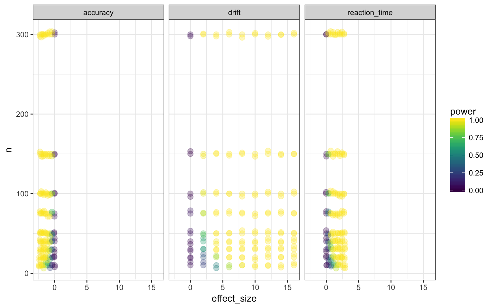
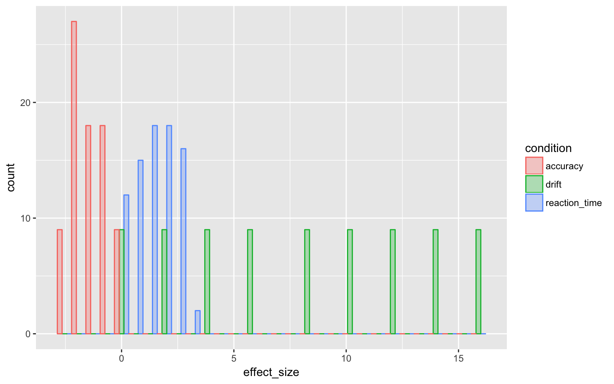
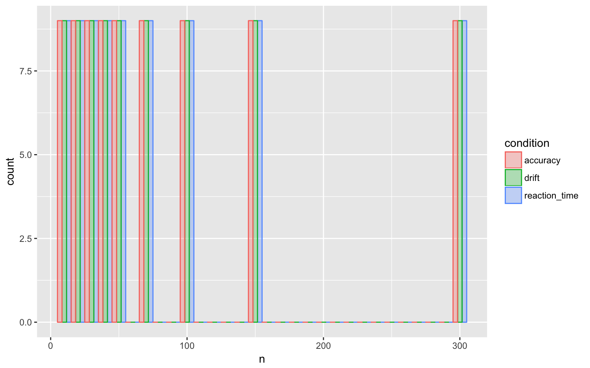
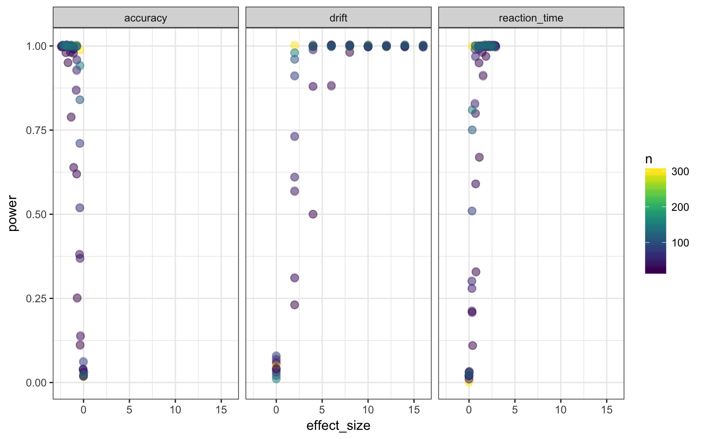

Powersim Data Summary
Anna Krystalli
2018-06-21
data-properties.Rmdlibraries
library(dplyr)
#>
#> Attaching package: 'dplyr'
#> The following objects are masked from 'package:stats':
#>
#> filter, lag
#> The following objects are masked from 'package:base':
#>
#> intersect, setdiff, setequal, union
library(ggplot2)
library(viridis)
#> Loading required package: viridisLite
library(tidyr)data
powersim represents a tidy processed versions of summary.csv, an initial sample of simulation results. The following figures highlighted the limitations of the data driving the current app prototype.
load(here::here("data", "powersim.rda"))
powersim
#> # A tibble: 243 x 5
#> # Groups: condition, n [27]
#> n condition effect_size power bin
#> <dbl> <chr> <dbl> <dbl> <int>
#> 1 10. accuracy 0.0305 0.0300 9
#> 2 10. drift 0. 0.0600 1
#> 3 10. reaction_time 0.0378 0.0300 1
#> 4 300. accuracy 0.00480 0.0200 9
#> 5 300. drift 0. 0.0500 1
#> 6 300. reaction_time -0.000772 0. 1
#> 7 10. accuracy -0.376 0.110 8
#> 8 10. drift 2.00 0.230 2
#> 9 10. reaction_time 0.394 0.110 2
#> 10 300. accuracy -0.385 0.990 8
#> # ... with 233 more rowsUnique n bins, bin n = 9.
powersim$n %>% unique %>% sort
#> [1] 10 20 30 40 50 75 100 150 300Unique effect_size bins Here lies the problem of selecting a z_value for effect_size
powersim$effect_size %>% unique %>% sort
#> [1] -2.4272116920 -2.3548387070 -2.3000929546 -2.2771856992 -2.2738240314
#> [6] -2.2488688578 -2.2483501977 -2.2402927669 -2.2327880645 -2.1880037995
#> [11] -2.1089338844 -2.1014189357 -2.0856330347 -2.0839779466 -2.0740254697
#> [16] -2.0633085008 -2.0520872847 -2.0450998775 -1.9225065263 -1.9154754694
#> [21] -1.8779361611 -1.8677893730 -1.8660819974 -1.8656258579 -1.8507332083
#> [26] -1.8267719716 -1.8267204124 -1.6955364306 -1.6461741301 -1.6455009060
#> [31] -1.6409962293 -1.6383080905 -1.6280658349 -1.6214193245 -1.6166092499
#> [36] -1.6122624889 -1.4288017871 -1.3936198570 -1.3918380824 -1.3806421679
#> [41] -1.3707062690 -1.3666131798 -1.3584901926 -1.3499720149 -1.3458815898
#> [46] -1.0944306792 -1.0848813642 -1.0844380096 -1.0830314873 -1.0752923801
#> [51] -1.0657587750 -1.0654607440 -1.0653618363 -1.0544388990 -0.8007363919
#> [56] -0.7571754133 -0.7502567830 -0.7500602353 -0.7429802067 -0.7378104222
#> [61] -0.7355705320 -0.7274273751 -0.6928232124 -0.4371084735 -0.4073326310
#> [66] -0.4012246338 -0.3983810533 -0.3909159581 -0.3847636609 -0.3835282255
#> [71] -0.3761245392 -0.3362324078 -0.0488772464 -0.0407184277 -0.0283805775
#> [76] -0.0202453437 -0.0173745663 -0.0135068010 -0.0062127642 -0.0042353160
#> [81] -0.0019802617 -0.0007715782 -0.0004554278 -0.0001878455 0.0000000000
#> [86] 0.0006273366 0.0023111004 0.0048006829 0.0152076526 0.0304898211
#> [91] 0.0378157473 0.3096090868 0.3127876873 0.3163073077 0.3259723439
#> [96] 0.3327859898 0.3407111333 0.3468426586 0.3481788796 0.3944304955
#> [101] 0.6406018043 0.6611961544 0.6784813067 0.6786508030 0.6820422635
#> [106] 0.7004436133 0.7072154933 0.7227552058 0.7556554485 1.0256285217
#> [111] 1.0266803536 1.0290523831 1.0457474867 1.0490435503 1.0492867333
#> [116] 1.0519286956 1.0887134352 1.1249391827 1.3843326855 1.3879618996
#> [121] 1.3891919867 1.3975352930 1.4092477635 1.4189827174 1.4191707155
#> [126] 1.4296330748 1.5299441893 1.7355918042 1.7364538685 1.7576865444
#> [131] 1.7693458349 1.7778756693 1.7794527439 1.7952823681 1.8390291514
#> [136] 1.8396387559 2.0000000000 2.0476593638 2.0719195351 2.1000882141
#> [141] 2.1070377933 2.1113168047 2.1186771297 2.1487319198 2.1756064762
#> [146] 2.2112606785 2.4257491313 2.4284662020 2.4317670142 2.4560335473
#> [151] 2.4571877425 2.4590782694 2.4640324107 2.5015167913 2.6547604741
#> [156] 2.7397733550 2.7517066071 2.7608217663 2.7662815393 2.8262301533
#> [161] 2.8304039047 2.8411108468 2.8697281211 2.9245070173 4.0000000000
#> [166] 6.0000000000 8.0000000000 10.0000000000 12.0000000000 14.0000000000
#> [171] 16.0000000000However, each condition & n combination has the same number of effect_size bins, n = 9.
powersim %>% group_by(condition, n) %>% count()
#> # A tibble: 27 x 3
#> # Groups: condition, n [27]
#> condition n nn
#> <chr> <dbl> <int>
#> 1 accuracy 10. 9
#> 2 accuracy 20. 9
#> 3 accuracy 30. 9
#> 4 accuracy 40. 9
#> 5 accuracy 50. 9
#> 6 accuracy 75. 9
#> 7 accuracy 100. 9
#> 8 accuracy 150. 9
#> 9 accuracy 300. 9
#> 10 drift 10. 9
#> # ... with 17 more rowspredictors
effect_size vs n
Shows the grid of sampling in predictor space. Drives the binning of z_values into options avalaible to the user.
powersim %>% ggplot(aes(x=effect_size, y = n, colour = power)) +
geom_point(alpha = alpha, size = size) + scale_color_viridis() +
geom_jitter(alpha = alpha, size = size) + facet_grid(~condition) + theme_bw() 
effect_size sampling bins
Currently uneven and with little overlap of range. Problematic for plotting on the same axes. Currently handled through bins.
powersim %>% ggplot(aes(x=effect_size, fill = condition, colour = condition)) +
geom_histogram(alpha = alpha, position = "dodge")
#> `stat_bin()` using `bins = 30`. Pick better value with `binwidth`.
n sampling bins
Complete coverage of all bins of n across all conditions.
powersim %>% ggplot(aes(x=n, fill = condition, colour = condition)) +
geom_histogram(alpha = alpha, position = "dodge")
#> `stat_bin()` using `bins = 30`. Pick better value with `binwidth`.
response: power
power vs effect_size
powersim %>% ggplot(aes(x=effect_size, y = power, colour = n)) +
geom_point(alpha =alpha, size = size) +
scale_color_viridis() +
geom_jitter(alpha = alpha, size = size) + facet_grid(~condition) + theme_bw() 
power vs n
powersim %>% ggplot(aes(x=n, y = power, colour = effect_size)) +
geom_point(alpha = alpha, size = size) +
scale_color_viridis() +
geom_jitter(alpha = alpha, size = size) + facet_grid(~condition) + theme_bw() 
power distribution
powersim %>% ggplot(aes(x=power, fill = condition, colour = condition)) +
geom_density(alpha = alpha) + coord_flip()